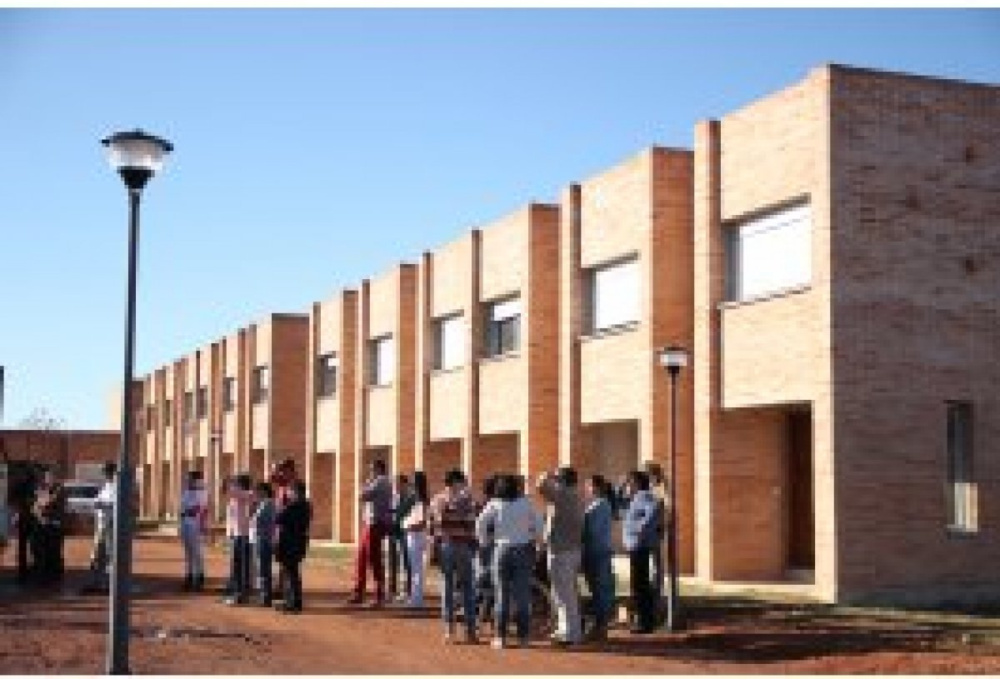
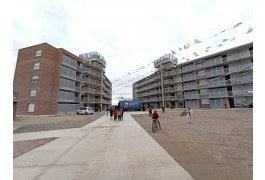

FSV
FSV Cutcsa Agraciada
Fondo Social de Vivienda de obreros y empleados de Cutcsa.
Fomentamos y acompañamos la construcción de viviendas cooperativas, desde la integración de los grupos humanos hasta el final de la obra.
El Área Hábitat de CCU se dedica a fomentar y acompañar las experiencias de construcción de viviendas cooperativas, desde la integración de los grupos humanos hasta el final de la construcción. Lo hace a través de su Instituto de Asistencia Técnica, un equipo interdisciplinario integrado por arquitectos, ingenieros, trabajadores sociales, abogados y contadores, entre otros.
Además, trabaja con un programa de regularización de asentamientos cuyo objetivo es que las familias radicadas en espacios irregulares se establezcan en viviendas dignas, con asesoramiento en proyectos urbanos, arquitectónicos, constructivos, sociales, legales y de capacitación.
El grupo aporta 21 horas de trabajo semanales equivalentes al 15 % del préstamo.
Solución habitacional para trabajadores de una misma empresa o sindicato.
Realojo en viviendas dignas construidas por ayuda mutua, con abordaje integral.
Recuperación de fincas y tejido urbano existente para uso habitacional cooperativo.
Respuestas para hogares con necesidades habitacionales urgentes.
Servicios a cooperativas, organismos públicos y otras organizaciones.
Desde 1961 hemos trabajado junto a cooperativistas de muchas localidades del país.
Fondo Social de Vivienda de obreros y empleados de Cutcsa.

Cooperativa de vivienda por ayuda mutua en Tacuarembó.

Cooperativa de vivienda por ayuda mutua. Inaugurada en 2022.
No hay cooperativas en ese estado.